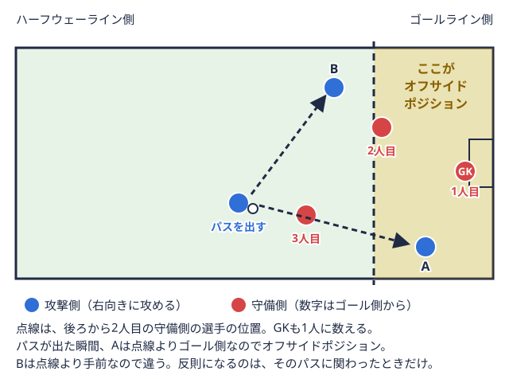

技術・戦術 2026-11-17
サッカー ゴールキーパーに求められる能力｜大学サッカーのGK像
大学のサッカー部に入ると、GKゴールを守る選手で、チームで唯一、ペナルティエリア内で手を使える。パスをつなぐ役もこなす。 用語辞典で見るの人数がフィールドプレーヤーに比べて限られるため、練習でも試合でも「自分は何を求められているのか」を意識する場面が増えます。高校まではシュートを止めることが中心だったのに、大学では足元の技術やビルドアップ自陣の後ろの方から、パスをつないで少しずつ前に進み、攻撃を組み立てること。用語辞典で見るへの関与を求められて戸惑った、という声は珍しくありません。この記事では、ゴールキーパー（GK）に求められる能力を、公開されている研究や競技規則の情報をもとに整理し、大学サッカーの現場でどう優先順位をつけるかを考えます。
用語辞典で見るの人数がフィールドプレーヤーに比べて限られるため、練習でも試合でも「自分は何を求められているのか」を意識する場面が増えます。高校まではシュートを止めることが中心だったのに、大学では足元の技術やビルドアップ自陣の後ろの方から、パスをつないで少しずつ前に進み、攻撃を組み立てること。用語辞典で見るへの関与を求められて戸惑った、という声は珍しくありません。この記事では、ゴールキーパー（GK）に求められる能力を、公開されている研究や競技規則の情報をもとに整理し、大学サッカーの現場でどう優先順位をつけるかを考えます。
なお、ポジション全体の比較はサッカーのポジション適性・特徴の記事で扱っています。ここではGKに絞って掘り下げます。
GKの役割は「止める」だけではなくなっている
GKの役割は、時代とともに広がってきました。大きな転機として語られるのが、1992年のバックパスルールの変更です。味方が意図的に足で蹴り戻したボールを、GKが手で扱えなくなりました。この変更以降、GKにも足でボールを扱う技術が求められるようになったと、スポーツ雑誌「Sportiva」のコラムは説明しています（出典は記事末尾）。
同コラムでは、GKのウォーミングアップも変わったと紹介されています。以前はキャッチングやセービングの練習から入るのが一般的でしたが、現在はトラップとキックなど足を使う練習から始めるのが普通になった、という内容です。GKが「11番目のフィールドプレーヤー」として位置づけられるようになったことが背景に挙げられています。
また、早稲田大学の卒業論文の要旨によると、2019年のゴールキック攻撃側が最後に触れたボールがゴールラインを越えたとき、守備側がゴール前の小さな区画から蹴って再開する方法。 用語辞典で見るの規則改正でペナルティエリアゴール前にある大きな長方形の区画。ゴールを守る選手（ゴールキーパー）が手を使えるのは、この中だけ。
用語辞典で見るの規則改正でペナルティエリアゴール前にある大きな長方形の区画。ゴールを守る選手（ゴールキーパー）が手を使えるのは、この中だけ。 用語辞典で見る内の味方へのパスが可能になり、GKが攻撃の起点になる場面が増えた一方、GKのミスが失点に直結するリスクもあると整理されています。
用語辞典で見る内の味方へのパスが可能になり、GKが攻撃の起点になる場面が増えた一方、GKのミスが失点に直結するリスクもあると整理されています。
つまり現在のGKには、おおまかに次の二つの顔があります。
- ゴール前の最後の砦としての役割: シュートストップ、クロスへの対応、一対一の対応
- 攻撃の最初の担い手としての役割: ゴールキックやパスキャッチ後の配球、ビルドアップへの参加
どちらをどの程度重視するかはチームの戦い方によって異なります。ボール保持を重視する戦術なら足元の技術が強く求められ、自陣に構えて守る戦術ならシュートストップや空中戦浮いたボールを、ジャンプして頭などで相手と競り合うプレー。守備でも攻撃でも起こる。用語辞典で見るの比重が相対的に高まる傾向があります。
大学生GKの試合ではどんな動きが多いのか
「GKの練習は何を優先すればよいか」を考えるうえで参考になるのが、大学生GKの試合を分析した研究です。筑波大学の研究グループが「コーチング学研究」第31巻第1号（2017年）に発表した「大学生男子サッカーにおけるゴールキーパーのゲーム分析」では、2014年の関東大学リーグ戦参加チームが一定の期間にわたって何試合も戦い、成績の合計で順位を決める大会の形式。用語辞典で見るを含む公式戦27試合に出場した54人のGKを対象に、1,398回のGKの動作を映像から記録しています。
この研究の主な結果は次のとおりです。
- 記録された動作のうち、シュートを止めるセービングの動作が303回で、GK特有の動作として最も多かった
- セービングの中では、準備動作を伴って跳ぶダイビングが最も多かった
- 準備動作としては、軽く跳ぶ動作が最も多かった
- 研究グループは、さまざまな高さのシュートがペナルティエリア内から打たれることから、準備動作を伴うダイビングの習得が必要だと結論づけている
ここで注意したいのは、この研究が2014年のデータであり、現在の試合の傾向とは異なる可能性があることです。また、数値は対象となった27試合の範囲に限られます。それでも、「セービングが最も頻繁に求められ、その中心が準備動作を伴うダイビングである」という整理は、練習メニューを考える際の出発点になります。
一方で、記録された1,398回のうち、セービング以外の1,095回はゴールキックやキャッチ後のスローイングなどのプレーでした。セービングの回数は多くても、動作全体の中ではセービング以外のプレーが占める割合も大きい、という見方もできます。
GKに求められる能力を5つに整理する
ここまでの情報と、各種の解説を踏まえると、大学サッカーのGKに求められる能力は次の5つに整理できます。これは編集部による整理であり、すべてのチームで同じ優先順位になるわけではありません。
- シュートストップ（セービング）: 準備動作、ダイビング、ポジショニングを含む、失点を防ぐ技術
- ハイボール・クロスへの対応: 落下点の予測と、キャッチかパンチングかの判断
- 足元の技術: トラップ、ロング・ショートのキック精度、プレッシャー下での判断
- コーチング（声での指示）: ディフェンスラインの押し上げや、セットプレープレーが止まったあと、コーナーキックやフリーキックなど、決まった形で再開する場面からの攻撃や守備。用語辞典で見るでの守備の配置
- メンタルの安定: ミスの後に切り替えて次のプレーに入る力
5番目については、元GKコーチが体格や運動能力と並んでメンタル面の重要性を語っているとするメディア記事があります（Yahoo!スポーツの連載。リフレッシュ能力に触れた内容）。ただし、メンタルは数値化しにくく、個人差の大きい領域です。「こう鍛えれば必ず強くなる」と言い切れるものではないため、自分に合った切り替えの方法を、練習や試合の中で試しながら見つけていく姿勢が現実的です。
競技規則の変更はGKのプレーに直結する
GKは競技規則の変更の影響を直接受けやすいポジションです。最近の主な変更を確認しておきましょう。
2025/26：手でボールを持てる時間が8秒に
日本サッカー協会（JFA）は2025年6月19日の理事会で、2025/26の競技規則の改正を報告しています。この改正では、GKが手や腕でボールをコントロールできる時間について、8秒の制限内の残り5秒を主審試合を進行し、反則などの判定を最終的に決める審判。ピッチの中で笛を吹く。用語辞典で見るが合図してカウントダウンすることが盛り込まれました。
報道によると、GKがボールを手に持ったまま8秒を超えると、相手チームにコーナーキック守備側が最後に触れたボールがゴールラインを越えたとき、攻撃側がピッチの角から蹴って再開する方法。用語辞典で見るが与えられます。従来は6秒を超えると相手に間接フリーキック反則があった地点から、止めたボールを蹴って再開する方法。直接ゴールを狙える場合と、狙えない場合がある。用語辞典で見るが与えられる規則でしたが、時間が延びる一方で、反則競技規則で禁じられているプレー。相手を押す・蹴る、手でボールを扱うなど。起きると相手ボールで再開される。用語辞典で見る時の措置がコーナーキックに変わりました。主審は残り5秒になると片腕を上げて指で数える、とされています。
2026/27：ゴールキックの5秒カウント
2026/27の改正では、スローインボールがタッチラインを越えたとき、最後に触れなかった側が両手で頭の後ろから投げ入れて再開する方法。用語辞典で見るとゴールキックに5秒のカウントダウンが導入されました。5秒が終わった時点でボールがインプレーになっていない場合、ゴールキックは相手チームのコーナーキックになると、JFAの発表や報道で紹介されています。詳しくはサッカー ルール改正2026/27の変更点の記事にまとめています。
これらの規則は、GKが時間をかけて味方の位置を待つ、あるいは安全なパスコースを探して長く持つ、といった使い方を制限する方向に働きます。大学の公式戦にいつからどの項目が適用されるかは連盟ごとの大会要項で異なる場合があるため、所属リーグの案内を確認してください。
練習では次のような工夫が考えられます。
- キャッチ後に「何秒で配球するか」を意識して、実戦に近い時間感覚で練習する
- ゴールキックの前に、味方の立ち位置と最初のパスの狙いをチームで決めておく
- 紅白戦のときだけでも、主審役を置いてカウントダウンの合図に慣れておく
練習の優先順位をどう考えるか
練習時間は限られるため、すべてを同じ比重で行うのは現実的ではありません。次のように整理してみてください。
| 項目 | 取り組み方の例 | 一人でできるか |
|---|---|---|
| セービング | 準備動作（軽いステップ）から跳ぶ反復、コーチやGK仲間のシュート練習 | 壁やネットを使えば一部可 |
| ハイボール | 落下点の予測、キャッチの姿勢の確認 | 相手が必要 |
| 足元の技術 | 壁を使ったトラップとキック、ロングキックの的当て | 可能 |
| コーチング | 練習中から声を出す習慣づけ | 練習中に意識する |
| メンタル | ミスの後の切り替えの言葉を決めておく | 可能 |
足元の技術は壁と少しのスペースがあれば取り組みやすい項目です。自主練習のメニューの組み方は、大学サッカー部の個人練習メニューの記事や練習メニューの組み立て方の記事も参考にしてください。
なお、日本サッカー協会は1998年のFIFAワールドカップ初出場時の分析をきっかけに、GKの養成が急務だとして「GKプロジェクト」を立ち上げたと紹介しています（2021年の記事）。代表強化、ユースJリーグのクラブなどが持つ、高校生年代の育成チーム。高校の部活とは別のクラブとして活動する。用語辞典で見る育成、指導者養成の3つのアプローチで進められているとされており、GKの専門的な指導が国内でも整備されてきたことがうかがえます。大学のGKも、チームのGKコーチや学生コーチ、あるいはOBの指導を受ける機会があれば、積極的に質問するとよいでしょう。
GKの怪我予防：指と全身のケア
GKは手でボールを扱うため、指の怪我への備えが欠かせません。びわこ成蹊スポーツ大学の卒業研究（林氏、2010年）は、高校生GK32名と大学サッカー部のGK18名への無記名アンケートを行い、高校生・大学生ともに指の怪我が圧倒的に多く、突き指と骨折が目立つこと、大学生は8月・9月が多かったことを報告しています。著者は疲労の蓄積が一因と考察しています。小規模なアンケートであり、現在の全国的な傾向をそのまま示すものではありませんが、指のケアを意識する理由にはなります。
練習前後のテーピングやストレッチ、疲労がたまる夏場の練習量の調整は、個人でも取り組める対策です。ストレッチの考え方はサッカーの怪我予防とストレッチの記事に、重傷が多い前十字靭帯の予防は前十字靭帯の予防トレーニングの記事にまとめています。痛みや違和感がある場合は、自己判断で続けず、トレーナーや医療機関に相談してください。
失点の数字から守備を見る：関東1部の例
GKの評価は、失点の数だけで決まるものではありません。失点は最終ラインゴールキーパーの前で、横に並んで守る守備の選手たちの列。この位置の高さが、守り方の特徴になる。 
本サイトの関東大学サッカーリーグ1部の記録室では、チームごとの総得点と総失点を確認できます。2026年11月17日時点（各チーム21試合）の編集部集計では、総失点が最も少ないのは国士舘大学の18点で、東洋大学と中央大学が20点で続いています。一方、総失点が最も多いのは桐蔭横浜大学の41点です。リーグは進行中のため、数字は更新されます。
自分が所属するリーグの順位表やチーム一覧、日程・結果とあわせて見ると、対戦相手の得点力や自チームの守備の課題を把握しやすくなります。関西・東北・北信越の各リーグにも同様のページがあります。
GKを目指す、続ける部員へ
ここまでの内容を、読者の状況別にまとめます。
- 高校でGKだった入部予定者: 大学ではセービングに加えて足元の技術が評価される場合があります。壁を使った足元の練習を始めておくと、入部後に戸惑いにくくなります。
- フィールドプレーヤーからGKに転向を打診された部員: 研究が示すように、セービングの基本は準備動作を伴うダイビングです。最初から難しい技にこだわらず、基本動作の反復から始めるのが無理のない進め方です。
- 出場機会が少ない控えGK: 試合に出る機会が限られる場合でも、練習での声かけや配球の精度、紅白戦での経験が評価の材料になることがあります。モチベーションの保ち方は交代選手のモチベーション維持の記事も参考にしてください。
ほかのポジションの役割も知っておくと、味方への指示の質が上がります。センターバック、サイドバック、ボランチの記事もあわせてご覧ください。
まとめ
現在のGKには、シュートストップだけでなく、足元の技術とビルドアップへの関与が求められています。大学生GKの試合分析では、セービング、特に準備動作を伴うダイビングが最も頻繁な動作とされており、練習の土台になります。競技規則も、2025/26の8秒ルール、2026/27のゴールキックの5秒カウントと変化が続いているため、年に一度は最新の規則を確認しておくと安心です。自分のリーグのデータも活用しながら、無理のない範囲で段階的に力をつけていきましょう。
出典
- Sportiva「GKの進化」コラム（2021年9月26日）
- 沼津直樹ほか「大学生男子サッカーにおけるゴールキーパーのゲーム分析」コーチング学研究 31巻1号 43-52頁（2017年）
- 早稲田大学 卒業論文要旨（GKの足元技術とルール改正）
- JFA「2025年6月19日 理事会報告」（8秒ルールの主審の合図）
- ゲキサカ「2025-26新競技規則のJリーグ適用開始日」（8秒ルールの内容）
- JFA「2026/27 サッカー競技規則改正」
- JFA GKプロジェクト関連記事（2021年2月19日）
- びわこ成蹊スポーツ大学 林将志「GKの傷害に関するアンケート調査」（卒業研究）
- Yahoo!スポーツ「川島永嗣の恩師が語るGKの神髄」（2018年）
- 関東大学サッカー連盟の公式データに基づく関東1部記録室（編集部集計・2026年11月17日時点）
この部活・競技を応援したい方へ。
取材してほしい部活を募集中
部活を続けながら、就活も進めたい方へ
体育会の学生のための就活相談です。無料で、メールアドレス・学年・所属の入力だけで始められます。